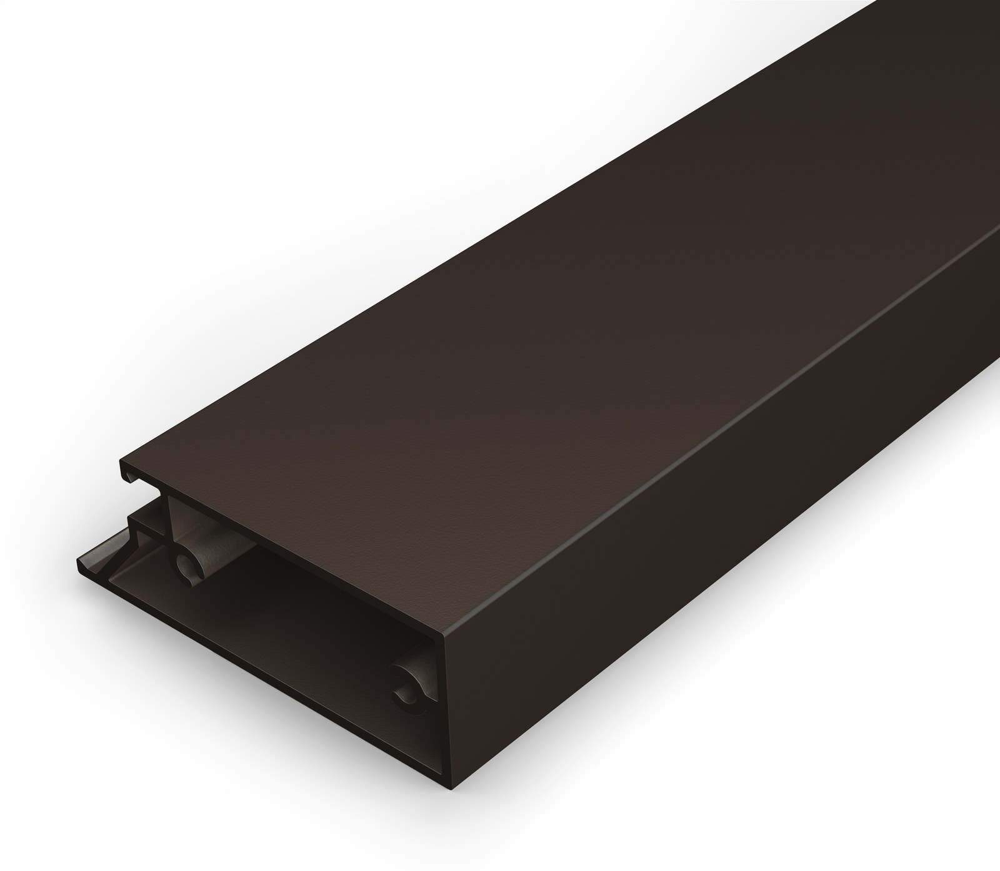

Рамочная система для фасадов со стеклом, стеллажей, гардеробных и витрин; лёгкая сборка рамки.
| Вставка | 4 мм — стекло или декоративная панель |
| Длина профиля | 3000 мм (и другие форматы) |
| Под петлю | фрезеровка Ø 35 мм, глубина до 13 мм |
| Цвета | антрацит, тёмно-оливковый, неро, никель, латунь, итальянское золото · NP / RAL |